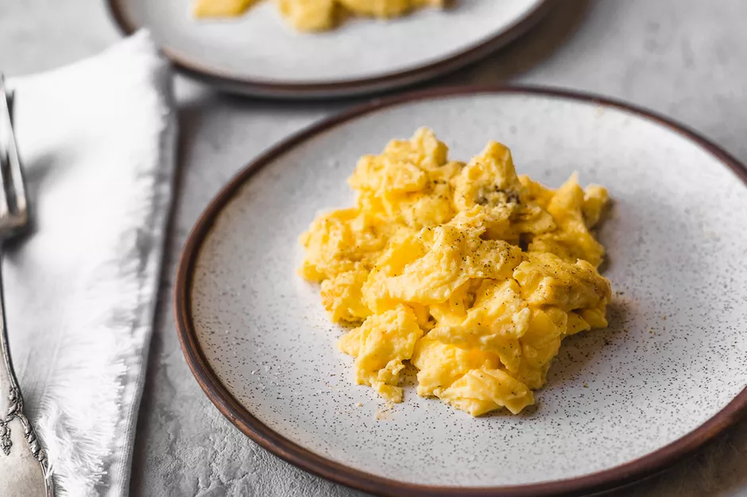

Scrambled Eggs

Description
The secret ingredient for perfect scrambled eggs is whisking the eggs thoroughly and vigorously before cooking them. Whisking incorporates air, which produces fluffier scrambled eggs, and fluffier eggs are the end goal. This cooking technique is a lot like the first steps in making an omelet. The difference is that you gently break up the eggs at the very end, leaving the curds larger and fluffier.
INGREDIENTS
- 8 large eggs
- 1/2 cup whole milk
- Salt, to taste
- Freshly ground white pepper (or black pepper), to taste
- 2 tablespoons clarified butter (or regular butter)
Directions
- Crack the eggs into a glass mixing bowl and beat them until they turn a pale yellow color.
- Add the milk to the eggs and season to taste with salt and white pepper. Whisk the eggs like crazy. If you're not up for that, you can use an electric beater or stand mixer with the whisk attachment. Whatever device you use, you're trying to beat as much air as possible into the eggs. Note that it may be easier and quicker to beat the eggs in two batches (4 at a time) to make sure you don't have any lumps.
- Heat a heavy-bottomed, nonstick sauté pan over medium-low heat. Add the butter and let it melt.
- When the butter in the pan is hot enough to make a drop of water hiss, pour in the eggs. Don't stir. Let the eggs cook for up to a minute or until the bottom starts to set but doesn't brown.
- With a heat-resistant rubber spatula, gently push one edge of the egg into the center while tilting the pan to allow the still liquid egg to flow in underneath. Repeat with the other edges, until there's no liquid left.
- Turn off the heat and continue gently stirring and turning the egg until all the uncooked parts become firm. Don't break up the egg, keeping the curds as large as possible. If you're adding any other ingredients, quickly add them now.
- Transfer to a plate when the eggs are set but still moist and soft. Eggs are delicate, so they'll continue to cook for a few moments after they're on the plate. Serve immediately and enjoy.